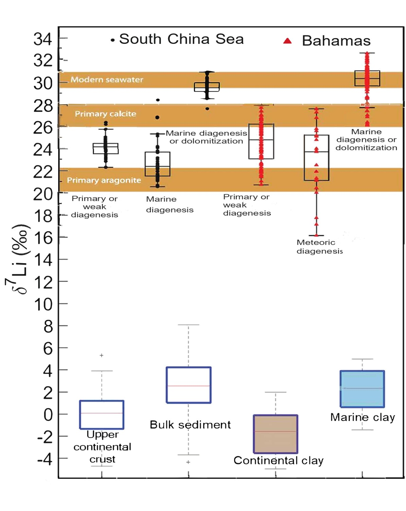

A 3-Billion-Year Lithium Isotope Record from Marine Dolostones
I am extending the seawater lithium isotope record beyond the Neoproterozoic back toward 3 billion years (Ga) using more than 500 marine dolostones. Dolostones show non-linear δ⁷Li evolution and heavier values compared to shallow-water carbonates (Kalderon-Asael et al., 2021). The seawater δ⁷Li curve from dolostones overlaps with δ⁷Li trends from foraminifera, brachiopods, and corals over the Mesozoic and Cenozoic, and with fluid inclusions in halites over the Phanerozoic.
Dolostones suggest modest non-linear changes in seawater δ⁷Li over the past 3 Ga, with minima during the Cretaceous, Cambrian, and Archean and maxima during the Tonian, Permian, and Quaternary Periods (Weldeghebriel et al., 2025, Goldschmidt Conference).
